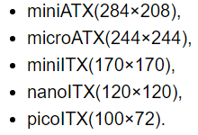

Материнка
Когда вы уже опредилились с выбором процессора, настало время задамуться о выборе материнской платы, так как она будет влиять на количество слотов памяти и плат расширения. В зависимости от чипсета мы сможем разгонять память - для процессоров AMD высокая частота памяти играет важную роль.Также не стоит забывать о двуканальном режиме который активируется путем вставки 2x одинаковых плашек памяти через одну если у вас 4 и более слота или в две имеющиеся.
Дальше стоит поговрить о форм-факторе их 5 видов
Форм-фактор влияет на количество размещаемых на ней элементов, а также в будущем будет влиять на выбор корпуса.
Чипсет.Он будет влиять на тип памяти и возможность разгона непосредственно самой памяти и процессора. Также стоит упомянуть что для каждого сокета есть свои чипсеты в основном они делятся на 3 "класса":
Важно знать что не все процессоры поддерживают разгон
Выбирая материнскую плату сразу стоит обратить внимание на ее тип питания и тип питания процессора.
Радиаторы на материнской плате не настолько нужны, но неменее важны. Их наличие весьма может сказаться на продолжительности жизни вашей платы, а также на ее температурный режим и стабильность во время работы.